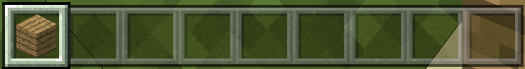
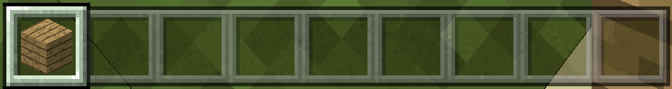
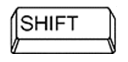

Minecraft – Main Characteristics and Components¶
Minecraft is an incredibly popular, fun and creative 3D game where players can use existing tools to build structures and other tools. There are many ways that Minecraft can be used to develop creativity and problem-solving skills in players.
Everything you program using MakeCode will have an immediate effect on your Minecraft world when you run the program. This is a great way to learn to program because you will be able to see the visual impact of your code right away. This immediate feedback will help you to solve problems, and allow you to see what impact changing and tweaking your code has on the game world in Minecraft! This feedback you get from the game can then be used for repeating or changing the code.
In this part, you will learn how to join the Minecraft world and write codes (using MakeCode) to expand and control the Minecraft environment.
Installing the Minecraft: Education Edition¶
To install the package, you need to complete the following steps:
Step 1.
Download Minecraft: Education Edition from the link: https://education.minecraft.net/get-started/download. In order to download this package, you need to access it through the account created by your school. (Ask your teacher to help you).
Step 2.
Download Minecraft: Education Edition to your computer.
Connecting Minecraft and MakeCode¶
Step 1.
Open Minecraft on your computer and sign in to Minecraft: Education Edition using your account.
Step 2.
Once you have signed in, you first need to create a world by pressing the Play button.

Click on the button Create New in the dialog window Worlds. Here you can also find some already created world templates. You can create your own world by clicking the button Create New World.

Step 3.
A window will open where you can adjust the settings for your world. For now, leave everything as you see it, except in the part Cheats, where you should slide the Activate Cheats button to the ON position, so you are able to code in Minecraft by using MakeCode.

Step 4.
Once you have set all of the options for your new world, which you can change at any point, click on the button Create.

By doing this, you have created your world where you can now place your blocks.
Step 5.
To be able to program (code) in Minecraft, you need to type the letter “c”. The window Code Builder will appear with the list of applications you can use for coding. Choose Microsoft MakeCode:
MakeCode home screen will appear in the Code Builder window.
Select the option New Project from the list My Projects to create a new project. In case you want to test other programs, you can choose one of the existing examples from the Tutorials list.
Once you have created a new project in Code Builder, the MakeCode user interface will open, and you can start coding:
To write code in Minecraft: Education Edition, just click on the button  .
.
Minecraft User Interface¶

You control everything in Minecraft with your keyboard keys, which help you move and perform different tasks.
List of some Minecraft controls:
- Pause
 - Toolbar Selection 
- Toolbar Selection 
{kind=link}
Q – Drop item (blocks)
W – Move forward (if you press it twice you can run, or swim if you are in the water)
A – Move left
S – Move backward
E – Inventory
D – Move right
 - Opens the chat and command window
- Opens the chat and command window
 - the Character can crouch
 - the Character can jump
- the Character can jump
The mouse is used to control the camera, that is, to see the world around us. Pressing the F5 key changes the camera angle.
MakeCode User Interface¶
This online editor provides the possibility of coding in JavaScript or graphic (block) programming where commands are stacked by using the “drag and drop” technique.
In the middle of the screen is the block palette (1) where all of the commands (blocks) are arranged in groups. On the right side, there is a work area (2) where you can drag commands and construct programs.
The block palette consists of different categories of blocks, which have different purposes and uses. Command blocks are divided into categories.
In MakeCode, programs are made up of various connected blocks. The blocks (commands) are divided into categories.
The name of the category (e.g. Player) indicates to the user which type of command (block) is included in that specific category. All blocks belonging to one category are the same color.
We drag each block to the work surface, and then we connect them to other blocks depending on the program we want to create. Right-clicking on a block opens a drop-down menu containing the option which allows you to create duplicates (Duplicate), add comments (Add Comment), delete blocks (Delete Block), as well as the option with which you can open the information section for additional help regarding certain blocks (Help).
It is time to use the blocks and create our first program in MakeCode.
Projects¶
In the following tutorials, we will introduce some interesting projects for programming Minecraft by using the MakeCode platform. All projects are done step by step, so everyone can do them again. All procedures for constructing projects are elaborated, from how the program is created to how it’s tested.